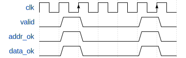
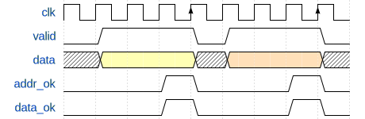
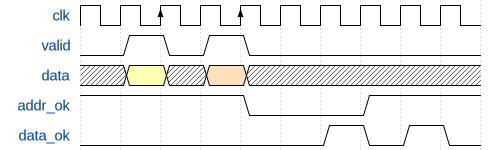
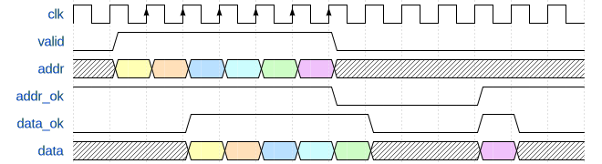
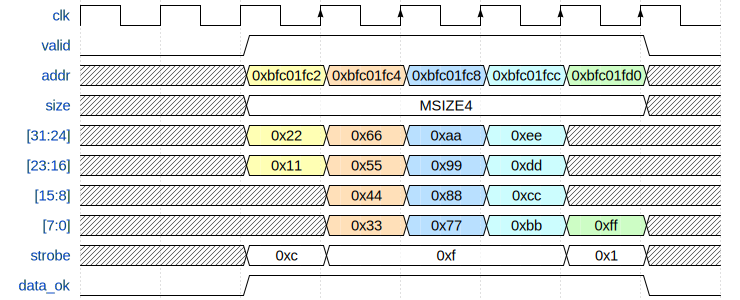

实验 2a：总线仲裁与延时
仲裁
多个独立运行的实体同时访问共享资源时，往往需要通过仲裁决定访问的先后顺序。
在实验 1 中，CPU 有两套访存接口：一个用于取指，另一个用于读写数据。test1_naive 将指令内存和数据内存分开了，从而能够同时支持两边的访问。现实生活中的计算机架构一般遵循 von Neumann 架构，即指令和数据放在同一个内存中。此时需要内存有两个读写端口。
但是多端口的存储单元往往非常消耗资源（例如，6 端口寄存器文件）。现代的 CPU 的核心数量越来越多，提供多端口的存储单元非常不现实。此外，如果有两个或者更多的端口同时写入同一个位置时，我们需要规定谁的写入是有效的，此时发生了写入冲突。
解决这一问题的一种方法是仲裁，即当有多个实体同时访问同一个对象时，允许其中一个进行访问，要求其它的实体等待。这个过程类似于加锁互斥。
test1~test4 的内存都只有一个端口，因此需要进行仲裁。
延时
仲裁会导致等待，因此我们不能再期望数据会在固定的时间内返回。此外，现代 CPU 的主频和内存频率往往不同，并且 CPU 为了降低功耗通常会动态调频，因此增加了访存需要的周期数的不确定性。下表是 Intel 的 Skylake 架构中 cache 的各项参数，来自 “Intel 64 and IA-32 Architectures Optimization Reference Manual”：

可以看到各级缓存的访问所需要的周期数都是不一样的，并且都不是固定的。
DBus
DBus 是一个单向握手协议，其定义在 common.svh 中：
typedef struct packed {
logic valid; // in request?
addr_t addr; // target address
msize_t size; // number of bytes
strobe_t strobe; // which bytes are enabled? set to zeros for read request
word_t data; // the data to write
} dbus_req_t;
typedef struct packed {
logic addr_ok; // is the address accepted by cache?
logic data_ok; // is the field "data" valid?
word_t data; // the data read from cache
} dbus_resp_t;
总线握手
DBus 的逻辑是：由 CPU 主动发出请求（拉起 valid 信号），等待内存给出反馈（addr_ok 和 data_ok）。DBus 的反馈分为两个阶段，一是内存已经得知并且缓存了 CPU 的请求，此时内存会将 addr_ok 拉起；二是内存已经完成了 CPU 的请求，此时将 data_ok 拉起。这两个过程就是所谓的 “握手”。握手是一个时序逻辑。每当时钟周期上升沿触发时，如果 addr_ok 为 1，表明握手成功。data_ok 同理。例如，CPU 想写入内存，内存也支持单周期写入，此时内存会把 addr_ok 和 data_ok 同时设为 1。等到时钟上升沿到达时，内存就会触发写入，同时 CPU 也知道内存已经完成这个写入了。

如果内存需要多个周期才能完成一次访存，CPU 需要一直拉起 valid 信号，直到内存的 addr_ok 响应。

访存有一个常见的优化是写缓冲区（store buffer）。写缓冲会保存收到的请求，发出 addr_ok，然后再进行真正的写内存操作。CPU 一般不用关心写操作是否真的完成了，因此流水线在收到 addr_ok 的时候就可以继续推进。这样可以明显减少写内存带来的流水线阻塞。

访存也可以切分流水线。CPU 的 fetch 阶段和 memory 阶段可以分为多个周期完成，此时需要 cache 也按照流水线的方式工作。这样即便单次访存的延时很高，cache 提供的吞吐率却不低。

注意：CPU 收到 addr_ok 后，如果没有其它请求，必须把 valid 撤下。
size 信号
size 是一个枚举。DBus 支持 MSIZE1（单字节）、MSIZE2（双字节）和 MSIZE4（四字节）三种模式。
Byte Lanes
DBus 是 32 位的总线，每周期至多传输 4 个字节。data 的四个字节可以视作四个独立的通道 lane[3:0]，lane[0] 对应地址最后两位为 2'b00 的那个字节，lane[1] 对应最后两位为 2'b01 的字节，依次类推。因此，无论我们给出的地址是否与 4 字节对齐，data 中的数据依然会按照 4 字节对齐的方式摆放。DBus 提供一个 4 位的写使能 strobe[3:0]，strobe[0] 表示 lane[0] 是否启用，strobe[3..1] 类似。通过这种方式，DBus 允许写入比 4 字节窄的数据。
例如，我们向地址 0xbfc001f2 写入单个字节的数据 0xcd 时，由于地址的最低两位为 0x2（2'b10），所以我们应该：
- 地址
addr依然是32'hbfc001f2。 - 将
data设置为32'h00cd0000。 - 将
strobe设置为4'b0100。
这么做可能比较反直觉。DBus 的 byte lanes 来源于 AXI 总线协议，其意图在于兼容只能 4 字节对齐寻址的设备（一般的内存都是这么做的），同时不要求 addr 必须与 4 字节对齐是因为可能会和只能字节寻址的设备交互（例如字符打印）。
换句话说，当你向 0x1f2 发送读取请求时，DBus 会把 0x1f0、0x1f1、0x1f2 和 0x1f3 这四个地址对应的字节全部返回给你，分别放在 data[7:0]、data[15:8]、data[23:16] 和 data[31:24] 中。同样的，当你向 0x1f2 这个地址写入时，实际上是同时向 0x1f0、0x1f1、0x1f2 和 0x1f3 这四个地址对应的字节写入，不过此时我们可以使用 strobe 信号单独决定每个字节是否真的需要写入。
下面展示了从地址 0xbfc01fc2 开始连续写入 15 个字节 0x11~0xff 的过程：

IBus
IBus 是 DBus 的子集，仅保留了读取 4 字节（word_t）的接口。
实验内容
下面将分步骤介绍本实验要完成的内容。
支持总线延时
在 mycpu_top.sv 的开头，有一个宏 FIXED_LATENCY 确定该模块使用类 SRAM 接口还是 AXI 接口：
/**
* TODO (Lab2) comment out the following line :)
*/
`define FIXED_LATENCY
module mycpu_top (
`ifdef FIXED_LATENCY
// ...
本次实验你需要将这一行 define 注释掉。之后
mycpu_top会使用 AXI 接口。- 仿真的顶层模块从
SRAMTop变成VTop。- 如果你上一次实验的地址翻译放在
SRAMTop，你可能需要将它们迁移到VTop。
- 如果你上一次实验的地址翻译放在
这里只修改了 mycpu_top 的接口，MyCore 依然使用 DBus/IBus。你不需要关心 AXI 接口是如何操作的。如果你感兴趣，可以自行阅读 util 文件夹下的 CBusToAXI.sv。
你需要修改流水线寄存器的阻塞逻辑。一条 lw 指令在 memory 阶段发出访存请求，在数据返回前，显然需要阻塞流水线。
一个简单的改动如下：
assign stallF = ~i_data_ok | ~d_data_ok;
assign stallD = ~i_data_ok | ~d_data_ok;
assign stallE = ~d_data_ok;
assign stallM = ~d_data_ok;
assign flushE = ~i_data_ok;
assign flushW = ~d_data_ok;
注意：这个处理的性能未必好，内存的写请求不一定需要进行 data_ok 的握手。
完成后，你应该能够通过 vivado/test1 的测试。
*实现仲裁器
我们已经提供了一个简单的仲裁器实现，在 source/util/CBusArbiter.sv 中。VTop 默认使用 CBusArbiter：
/**
* TODO (Lab2) replace mux with your own arbiter :)
*/
CBusArbiter mux(
.ireqs({icreq, dcreq}),
.iresps({icresp, dcresp}),
.*
);
CBusArbiter 有一个缺点，它需要花费一个时钟周期来确定谁有总线的访问权，无论是有多个请求还是只有一个请求。换句话说，CBusArbiter 会把所有的访存增加至少一个周期的延时。实际上这一个时钟周期可以被优化掉，只是这么做是要付出代价的。因为这种优化需要添加新的组合逻辑，有可能会增加关键路径的延时，导致 CPU 频率降低。
如果你想优化 CBusArbiter，请在 source/mycpu/MyArbiter.sv 中实现新的仲裁器，然后将 VTop 的 CBusArbiter mux 换成 MyArbiter mux。
另外请注意：CBusArbiter 默认的仲裁策略是 DBus 比 IBus 优先。如果你想调换优先级，请将上面 CBusArbiter mux 接口中的 icreq 和 dcreq 对换，以及将 icresp 和 dcresp 对换。
实现新的指令
“指令列表” 中有一张表，记录了 test1 到 test4 和所有性能测试会用到的指令。请据此确定 test2 需要添加的指令并实现。
test2 中需要额外实现的指令，主要有以下三类：
- 更多种类的分支跳转。
- 引入了以半字（16 位）和字节（8 位）为粒度的内存读写。
- 注意调整总线请求的
size部分，以及处理读写的数据。
- 注意调整总线请求的
- 移位的偏移量为寄存器数据。
接入 Verilator
下一轮实验会使用 Verilator 做模块级测试。本次实验先用 test1 和 test2，方便大家熟悉 Verilator 仿真的流程。
我们提供的测试框架里面，Vivado 仿真的顶层是 mycpu_top，而 Verilator 仿真的顶层用的通常是字母 V 开头的模块1（如 VTop、VCacheTop）。每一个顶层模块对应一个目标名称，也就是 make vsim 命令的 TARGET 参数。如果想以 source/mycpu/VTop.sv 这个文件作为顶层模块，其对应的 TARGET 就是 mycpu/VTop。
测试框架的代码放在 verilate/source 和 verilate/include 两个目录下。不同的顶层模块可能需要不同的测试代码，这些代码会分别放在 verilate/source 中对应子目录里面。如果 TARGET 是 mycpu/VTop，那么其专用的测试代码都放在 verilate/source/mycpu/VTop 下。我们提供了大部分 mycpu/VTop 的测试代码，目前这个目录下有：
defs.h：一些类型定义。mycpu.h：verilated 模型类的声明。mycpu.cpp：verilated 模型类的实现。vmain.cpp：仿真程序vmain的程序入口的代码。
所谓 verilated 模型是指把 SystemVerilog 描述的模块翻译成 C++ 代码后的一个 class。翻译后的 verilated 模型再和测试框架一起编译成可执行文件 vmain 后，运行 vmain 就会开始正式的仿真。
运行龙芯杯的 test1 和 test2 需要支持 trace 比对。你需要将 debug_* 信号暴露给 verilated 模型。以 writeback 阶段的 PC 为例，假设某个 CPU 结构如下面的代码所示：
module Writeback;
logic [31:0] pc;
endmodule
module MyCore;
Writeback wb;
endmodule
module VTop;
MyCore core;
endmodule
当 VTop 是顶层模块时，从 VTop 访问 PC 的跨模块引用应该写成 core.wb.pc。为了能在 Verilator 中访问到这个信号，首先你需要将 pc 声明为公开的：
module Writeback;
logic [31:0] pc /* verilator public_flat_rd */;
endmodule
/* verilator public_flat_rd */ 是一条 metacomment。其中 public 表示信号对外可访问，flat 表示信号名会被去层次化（flatten），rd 表示只读（read-only）。去层次化意思是 core.wb.pc 这个信号在翻译后的 C++ 代码中会以一个普通变量的方式呈现给 verilated 模型。C/C++ 的变量名里面不能有 “.”，因此 Verilator 会把 core.wb.pc 转换成 core__DOT__wb__DOT__pc。之后你需要修改 verilate/source/mycpu/VTop 文件夹中的 mycpu.cpp：
auto MyCPU::get_writeback_pc() const -> addr_t {
/**
* TODO (Lab2) retrieve PC from verilated model :)
*/
return VTop->core__DOT__wb__DOT__pc; // 访问 PC
}
这里 VTop 是指向顶层模块的作用域（scope）的指针，由 Verilator 自动生成。用 VTop 可以访问到先前模块内部公开的信号。当 C++ 代码调用上面这个函数时，就会返回当前 core.wb.pc 的值2。你还需要实现另外 3 个类似的函数。
之后在仓库根目录下运行：
make vsim TARGET=mycpu/VTop TEST=test1 -j
将会运行 test1。把 TEST=test1 换成 TEST=test2 就会运行 test2。test1 会输出以下内容：
./build/gcc/mycpu/VTop/vmain -m misc/nscscc/test1.coe -r misc/nscscc/test1.txt
(info) #1 completed.
(info) #2 completed.
(info) #3 completed.
(info) #4 completed.
(info) #5 completed.
(info) #6 completed.
(info) #7 completed.
(info) #8 completed.
(info) #9 completed.
(info) #10 completed.
(info) #11 completed.
(info) #12 completed.
(info) #13 completed.
(info) #14 completed.
(info) #15 completed.
(info) #16 completed.
(info) #17 completed.
(info) #18 completed.
(info) #19 completed.
(info) #20 completed.
(info) #21 completed.
(info) #22 completed.
(info) #23 completed.
(info) #24 completed.
(info) #25 completed.
(info) #26 completed.
(info) #27 completed.
(info) testbench finished in 337516 cycles (601.973 KHz).
随机延时
vmain 默认情况下并没有随机延时。可以使用 --p-disable/-p 参数开启随机延时。这个参数是一个概率值，表示内存每个周期无响应的概率。例如：
make vsim -j TARGET=mycpu/VTop TEST=test1 VSIM_ARGS='-p 0.99'
表示内存有 99% 的时间没有响应。如果设置为 -p 0，相当于关闭随机延时。
记录波形图
如果你不幸没有通过 vmain 的测试，看到了类似于下面的报错：
TextDiff: on line 18:
expect: "1 9fc03be0 10 00000001"
got: "1 9fc05100 10 00000001"
make: *** [verilate/Makefile.vsim.mk:123: vsim] Aborted (core dumped)
这是 trace 比对出错。你可能需要使用波形图来调试。为了加速仿真，make vsim 默认不会记录波形图。使用 --fst-trace/-f 参数开启波形图记录并且指定波形图文件保存的位置。例如：
make vsim TARGET=mycpu/VTop TEST=test1 -j VSIM_ARGS="-f build/trace.fst"
将会把波形图保存到 build 目录下的 trace.fst。仿真成功运行或者中途失败退出时，会保存 FST 波形图，并且能在终端输出看到一行信息：
FST trace: stop @558950
FST 格式的波形图文件需要用 GTKWave 打开：
gtkwave build/trace.fst
你需要自行摸索 GTKWave 的使用方式。我们提供了一份简短的使用说明：“使用 GTKWave”。
如果遇到你无法确定原因的错误，例如 assertion failed、segmentation fault 之类，有可能是测试框架的问题。请及时向助教反馈。如果遇到这些错误时，终端/命令行最后输出了 “(core dumped)”（上面 trace 比对出错的输出就有），说明这个错误可以使用 coredumpctl gdb 启动 GDB 查看。请进入 GDB 输入 backtrace 后回车，将调用栈打印出来，然后连同调用栈和错误信息一起反馈给助教。
总结
总结一下实验 2a 要做的事情：
- 修改取指和访存阶段的逻辑，支持多周期访存。
- 在 Vivado 仿真中通过
test1。
- 在 Vivado 仿真中通过
- *在
MyArbiter.sv中实现仲裁器。 - 根据 “指令列表” 添加新的指令。
- 在 Vivado 仿真中通过
test2。
- 在 Vivado 仿真中通过
- 修改
verilate/source/mycpu/VTop下的 C++ 代码。- 在 Verilator 仿真中通过
test1和test2。
- 在 Verilator 仿真中通过
- 通过
test1和test2上板测试。
以上是我们推荐的完成顺序。
实验提交
本实验和实验 2b 一起提交。
18307130024/
├── report/ （报告所在目录）
├── source/ （源文件所在目录）
└── verilate/ （仿真代码所在目录）
用 zip -r 18307130024.zip 18307130024/ 打包。用 unzip 18307130024.zip 检查，应在当前目录下有学号目录。
通过标准
- 通过以下四条命令的测试：
make vsim -j TARGET=mycpu/VTop TEST=test1make vsim -j TARGET=mycpu/VTop TEST=test1 VSIM_ARGS="-p 0.99"make vsim -j TARGET=mycpu/VTop TEST=test2make vsim -j TARGET=mycpu/VTop TEST=test2 VSIM_ARGS="-p 0.99"
- 上板通过
test1和test2。
实验报告要求
- 格式：PDF
- 内容：简要记录你所做的修改。写好姓名学号。附上测试通过时的照片或截图。
截止时间
2021 年 4 月 11 日 23:59:59
*思考题
-
张三在
source/util/CBusMultiplexer.sv中实现了自己的仲裁器，然而过不了仿真。请指出CBusMultiplexer存在的问题。 -
龙芯杯的测试框架中有一个叫做 CONFREG 的模块3，用来控制 FPGA 上的各种硬件资源，例如 LED 数码管、按钮。CONFREG 是一个 memory-mapped 设备。其中地址
0xbfaffff0是一个简化的 UART 打印接口，往这个地址写入 ASCII 码就可在仿真中输出文字。特别的，如果写入的值是0xff，就会立即停止仿真。李四写了一段汇编程序
hello.s，放在misc/hello目录下，它会打印 “Hello, world!”。但是李四买不起 CPU。请尝试将这段汇编代码编译成.coe文件，然后使用make vsim -j TARGET=mycpu/VTop VSIM_ARGS="-m [.coe 文件路径]"在你的 CPU 上运行这个程序。如果没有出错，
vmain最后会输出：./build/gcc/mycpu/VTop/vmain -m misc/hello/hello.coe Hello, world! (info) testbench finished in 652 cycles (515.101 KHz).至此，你
李四可以尝试在你的 CPU 上运行更加复杂的程序了。 -
王五最近学习了 AXI 总线协议。AXI 是一个双向握手协议。王五推荐你阅读 “ AMBA AXI Protocol Specification v1.0”，希望你能了解并总结 AXI 总线的工作方式。
VTop 用的是将在实验 3a 中介绍的 CBus（cache bus），是 AXI 总线的简化。Verilator 仿真的顶层模块和 Vivado 中不同的原因之一就是 CBus 模拟起来简单一些 :)
类型是 32 位的 uint32_t。
我们猜测这是 “configuration registers” 的缩写。